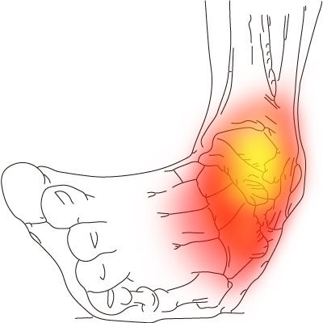
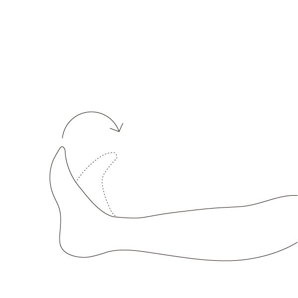
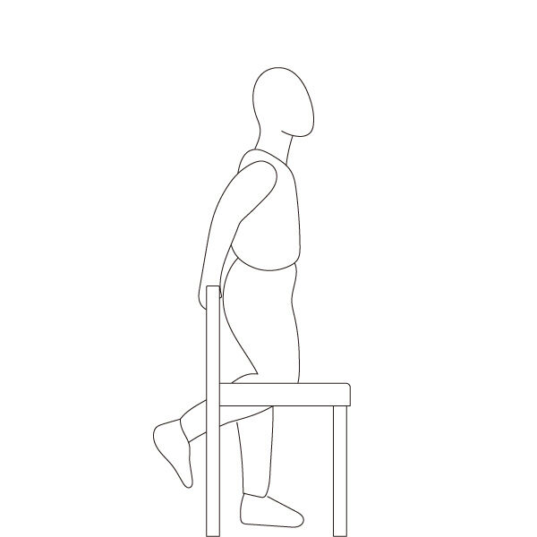
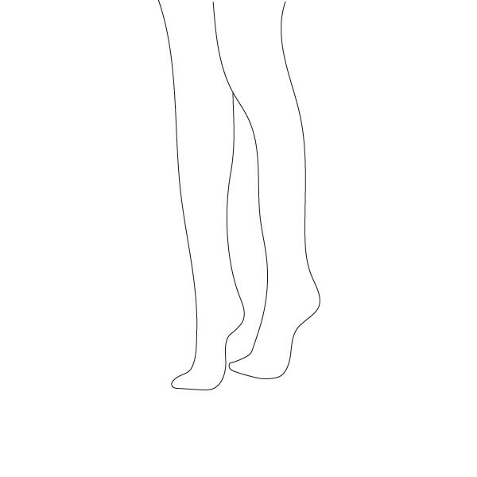
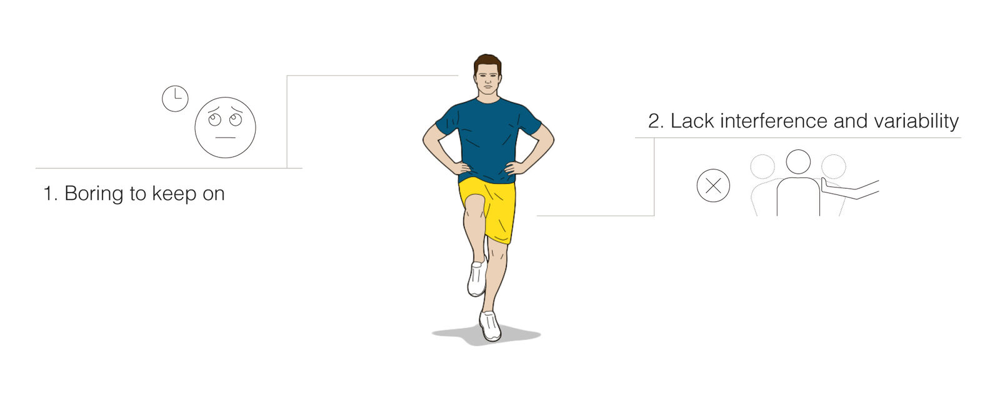
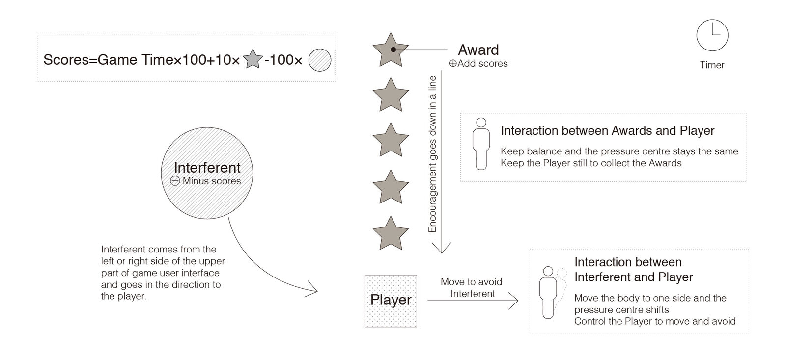
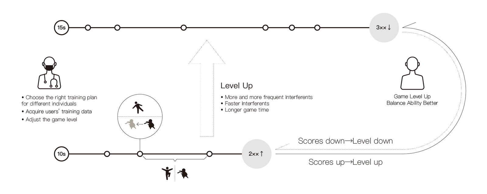
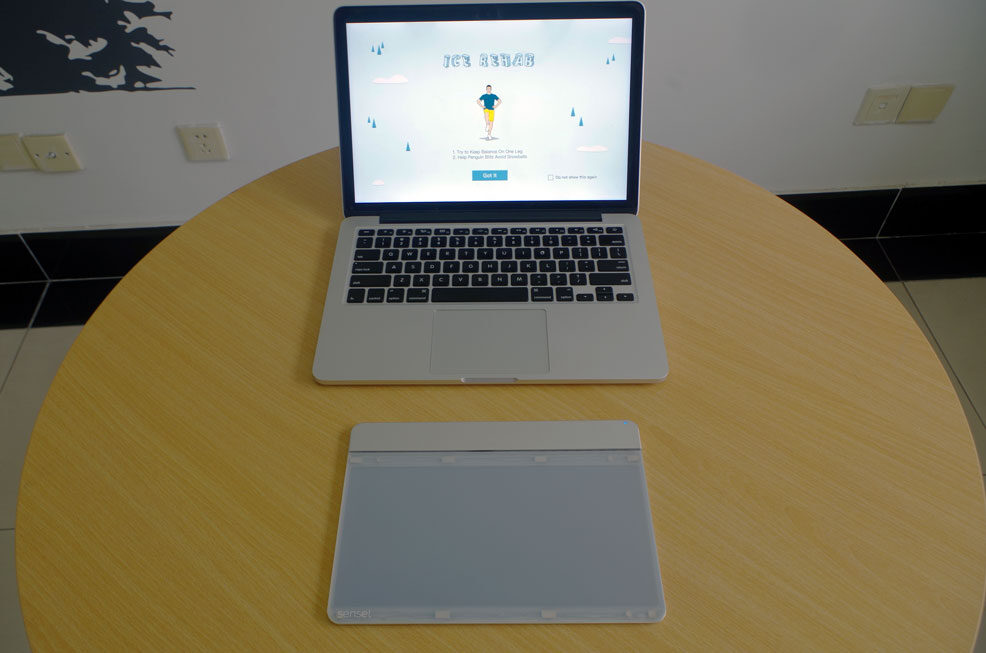
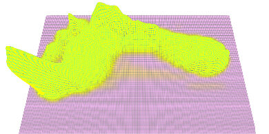
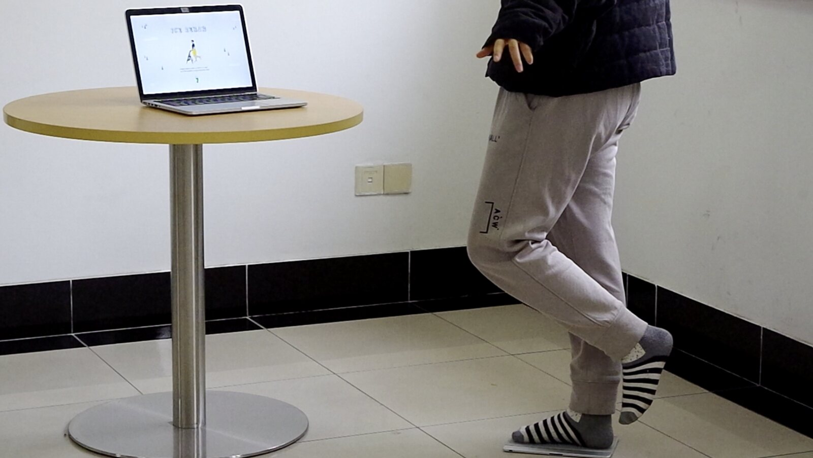

The problem
An ankle sprain is one of the most common injuries there is, and most people recover from one without surgery. What they need instead is rehabilitation exercise — and that is where the treatment tends to fall apart. Clinicians prescribe the exercises, patients find them dull, and they stop doing them. Immobilizing the joint for too long is a common treatment error, and skipped exercise leads to lasting pain, swelling, and in some cases chronic ankle instability.
The medical side of this is well understood. The behavioral side is not: the exercises work, people just do not do them. That gap was the project.

What the exercise actually is
Rehabilitation after an acute sprain runs in three stages, and clinicians have mature training templates for each.

Early functional rehabilitation

Intermediate functional rehabilitation

Advanced functional rehabilitation
I took the second one: proprioceptive training in intermediate functional rehabilitation. The standard exercise is a two-legged and then one-legged stance on a circular wobble board, five to ten repetitions per session, two or three sessions a day. That structure — fixed repetitions, fixed frequency, a performance you can measure continuously — maps onto game rounds and goals almost directly, which is why this stage is the one worth designing for.
Stage model after Mattacola, C. G. & Dwyer, M. K. (2002). Rehabilitation of the ankle after acute sprain or chronic instability. Journal of Athletic Training, 37(4), 413.
Two things wrong with the standard exercise

The first is motivational: standing still on a board is monotonous, so people do not complete the prescribed amount, and the amount is what makes it work.
The second is clinical. Proprioceptive training prepares the joint for slow and moderately rapid movement, but it does not challenge the neuromuscular system at the level that real perturbation does — a curb, a crowded platform, someone knocking into you. A quiet stance rehearses stability; it does not rehearse recovery.
So the design had two jobs: make the training something a person will finish, and put unpredictability into it without making it unsafe.
The game model

Staying still is the goal state. While the player keeps their balance, the pressure center stays put, the character holds its position, and a line of awards runs down the screen into it — steady balance is paid immediately and visibly, which is what the exercise itself never does.
Interferents enter from the left or right at random and cost score on contact, so the player has to move out of the way. The character travels in one dimension only, left and right, because the person doing it is standing on one injured leg and should not be decoding a complicated control scheme. The body doing the moving is not one-dimensional though: shifting your center of gravity while balancing on one foot puts the ankle through a range of angles and postures. Simple on screen, varied at the joint.
Progression

Difficulty has to climb as the ankle recovers, or the game stops being training and starts being a pastime. Three variables carry it: how often interferents appear, how fast they travel, and how long a round lasts. Level goes up when scores go up and back down when they do not, so the demand tracks the person rather than the calendar.
Clinicians set the starting plan and can read the training log afterwards. That log is a more reliable account of what a patient did than asking them.
Hardware


To keep the build simple I used a Sensel Morph as the input: a multi-touch pressure pad that reports the distribution of force under the foot. That is enough to tell whether someone is standing in the right posture and where their pressure center is. Output is an ordinary laptop or desktop screen. Both halves are things a household either already owns or can buy once, which matters for something meant to be used at home rather than in a clinic.
The interface
Ice skating gave the game its setting. It is itself a balance activity, so the rules need no explaining, and the story and characters give the training something to be about. The interface runs in four stages: introduction and task table, initialization and countdown, the game, and results.
Trying it out

Two people recovering from ankle sprains used the system for a week. I explained the daily task but did not make it compulsory, because the question was whether they would keep going, not whether they would comply. Both completed every session and improved over the week.
Two participants over one week is a first indication and not much more. It says the format is not off-putting and that people will return to it unprompted. It does not say the training is more effective than a wobble board — that needs a controlled comparison against the standard exercise, a larger group, and a clinical balance measure rather than a game score.
Write-up
The project is written up in An Interactive Training System Design for Ankle Rehabilitation (Liu, Dong & Tang, 2018).